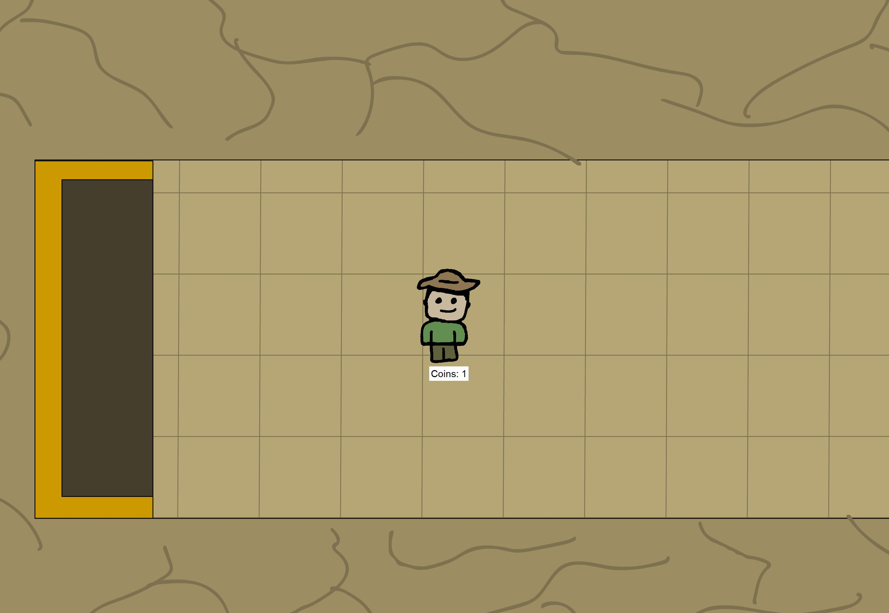

Hi! I’m a student at Boise State University (BSU) studying Games, Interactive Media, and Mobile Technology (which is basically video game design and related subjects), and Computer Science. And I am also a trained Cosmetologist.
I’ve lived in America for 18 years (15 of which were spent in Arizona), although I was born in Weston-super-Mare, England. I am a huge geek who loves Star Wars, Doctor Who, reading, and coffee.
"Welcome to the JIMMgle"
This is a short gif of a game I made in a group with a few other students in the GIMM program at BSU. You play as a tiger and are trying to make it to the temple, which is past the chasms, the river, the boulders, and the tree tops.

"Ruins of the Spirit"
This is a screenshot of a quick game loop I made for one of the two-week challenges for the Dev Club at BSU. You start in the ruins of a ancient building, and have to find all the coins to pay the spirit in the ruins for your freedom. Within the ruins there's three doors, one takes you into the past, one into the future, and the other just leads you farther into the ruins.
"Feed"
This is a game trailer for a game that I made in the first semester of GIMM. I was given the core structure of the game (trigonometry, array collection and removal, and enemy spawning), and I added in my own code, artwork, and story to reinvent the game.